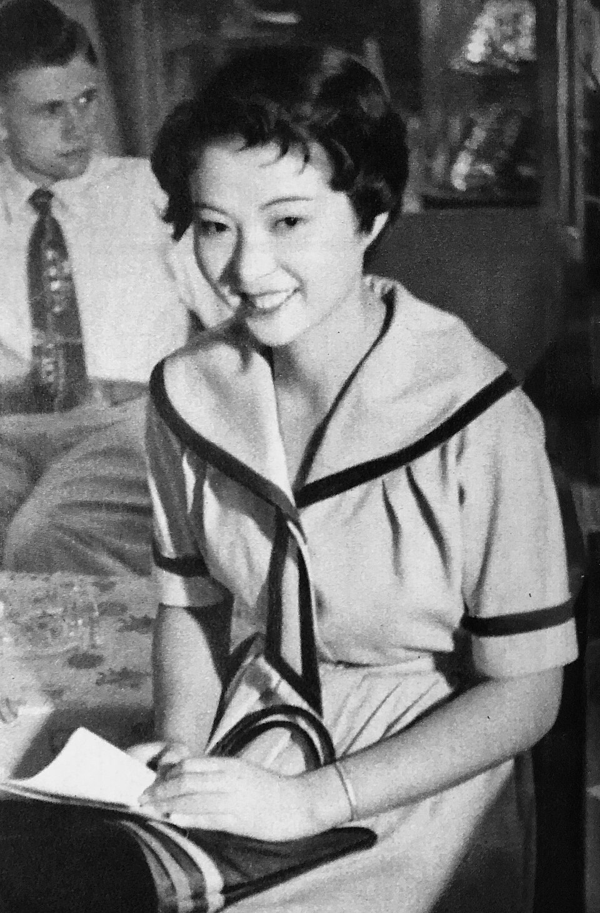
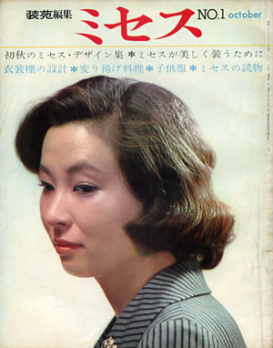

封面
THE SANKEI GRAPHIC · 1954.10.24
产业经济新闻社《サンケイグラフ》1954年10月24日号封面。此处为 960 像素宽的公有领域扫描。
封面文字
サンケイグラフ 週刊 10.24 1954
第二回推薦スター発表
THE SANKEI GRAPHIC 40円
这一张
1954年9月10日，新东宝本社开第二回「封面女郎」选考会。日本桥三越吴服卖场退职不久的中泽纯子得了第一。杂志把她推荐进摄影所，艺名改成池内淳子。封面把她放在一排银茶壶前面，淡蓝水手领、黑绦带、左手叉腰。刊名是黄铜字，左侧竖排「第二回推荐明星发表」。次年她以《皇太子的新娘》出道，演的是皇太子妃候选人。
肖像
同一期 · 1954

《サンケイグラフ》1954年10月24日号内页肖像。池内淳子，1954年。
著录
池内淳子（1954年）。出处与封面同一期。黑白，银盐印刷的杂志页。
这一张
裙子和封面是同一件：宽水手领、袖口两道深绦、腰间绦带垂下来。她坐着，左手按着摊开的书，腕上一条细镯。身后一个穿白衬衫、花领带的男人看着这边。封面是站姿和银器，这一张是坐下以后的室内。二十岁，还没有进片场。
ミセス
文化出版局 · 1961年10月 · 创刊号

扫描只有 300×382 像素，按原大附近陈列，没有放大修复。放大只会把印刷网点拉虚。
封面文字
装苑編集 ミセス NO.1 October
初秋のミセス・デザイン集 ミセスが美しく装うために
衣裳棚の設計 子供服 ミセスの読物
中间一项字小，疑为扬げ料理，不把看不清的字定死。
这一张
侧脸，发髻在脑后挽起，格子纹的高领。七年前封面还是水手裙和短卷发，这一期已经把她放进「主妇」两个字里。1960年富士电视台午间剧《日日の背信》（丹羽文雄原作，原保美共演）把白天的家庭主妇钉在电视机前，她因此被叫做「よろめき女优」——演那种婚外的动摇。创刊号用她的侧脸，卖的是初秋衣服、食谱和儿童服。
生平
本所 · 三越 · 新东宝 · 午间剧 · 舞台
- 11月4日生于东京府东京市本所区东两国，今墨田区。本名中泽纯子，四姐妹的长女。上代做过八代干货铺，父亲做洋伞电镀。小时候想当幼儿园老师。战时干过灶上、插秧、挑炭，骨架变粗。她后来说，洋服显不出柔，所以改穿肩线藏得住的硬质木棉风和服；和服穿一整天，也比洋服省事。
- 十文字学园高等部毕业，进日本桥三越本店吴服卖场。次年退职。
- 9月10日封面女郎选考第一，入新东宝。10月24日上了这一期封面。
- 电影《皇太子の花嫁》出道。1956年《新妻镜》第一次主演。
- 与演员柳泽慎一结婚，退出电影。1958年离婚，回到银幕和电视，此后独身。电视出道作是《眠狂四郎无頼控》。
- 《日日の背信》。一部午间剧，收视高到把她送进全国的午饭桌。
- 松本清张原作《けものみち》，电影里的成泽民子。同年起在 TBS《东芝日曜剧场》演《女と味噌汁》，一直演到 1980 年，共 38 回。角色是艺伎室户千佳子，艺名「手鞠」。白围裙、和服、厨房。她主演的剧经常到两成以上的收视率，被称为「20% 女优」。
- 《男はつらいよ 寅次郎恋歌》里演六波罗贵子。东宝《社长》系列和《驿前》系列里，她多次演迷惑森繁久弥的艺伎。
- 味之素「ほんだし」第一代广告面孔，做到 1985 年。1974 年 4 月到 1980 年 3 月与日本电视签专属，电影和《日曜剧场》除外。桥田寿贺子、石井富子的剧，主演助演都常有她。
- 东宝现代剧《空のかあさま》获艺术选奖文部科学大臣奖，同年受紫绶褒章。大河剧《利家とまつ》里演福。晨间剧演过《ひらり》（1992）、《天うらら》（1998）。
- 受旭日小绶章。
- 5月在中日剧场演《三婆》的松子，这是最后一部舞台。9月26日因肺腺癌在东京的医院去世，七十六岁。
本人说过的几句
她想演恶女，说女人身上有许多嘴上说不出来的一面；又觉得自己是江户人，也许还是把话说开更合适。戏里常演忍的妻子，生活里性急：菜要别人做，少一道菜、桌上没有味噌汤，脸色就会变。白兰地五杯就醉。她说自己不适合结婚，所以一直独身。幼年时和黑柳彻子是旧识。
剧目
电影 · 电视 · 舞台
电影
《新妻镜》（1956）初主演。《けものみち》（1965）。《沓挂时次郎 游侠一匹》（1966）演阿绢，对面是中村锦之助。《寅次郎恋歌》（1971）。《社长》《驿前》系列里的艺伎，常常叫染子、染太郎。
电视
《日日の背信》（1960）。《女と味噌汁》（1965–1980）。《国盗り物语》（1973）演阿万阿。《一人来い二人来いみんな来い》（1980–1981）。《ひらり》《天うらら》。《白色巨塔》等晚年剧。
舞台
明治座座长戏很多。《三婆》《おさん》《女たちの忠臣藏》。《空のかあさま》（2002）。最后一场是 2010 年 5 月中日剧场的《三婆》。
青叶之家
1980年9月2日 – 1981年1月27日 · TBS 周二晚九点
长桌、托盘、暖瓶，站着围围裙的那张记录，年代落在这部剧上。剧名《一人来い二人来いみんな来い》，全 22 集，脚本楠田芳子，TBS 与テレパック制作。她演中西律子：丈夫死了，隔了二十年回到娘家，本想把母亲留下的养护设施「青叶の家」解散卖掉。看见一个父亲来接孩子时的自私，她改了主意，自己把房子和孩子们的去路守下来。园里有保育员、炊事员，吃饭就是日常场面。
这是她和日本电视的专属刚结束之后，隔了很久再回 TBS 的连续剧。小时候想当幼儿园老师的人，四十七岁站在养护设施的饭桌边。围裙则是《女と味噌汁》里已经穿了十五年的那一件。
这一页没有剧照的原因
共享资源上她的类别只有五张。1954 年两张和 1961 年这张封面，标的是公有领域，也没有删除提名，收在这里。1959 年《雷电》和 1966 年《沓挂时次郎》的剧照正在版权删除提名之中，不收。1980 年饭桌上的那张，不在这批公有领域文件里。